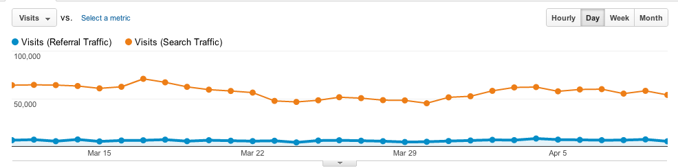

Google Analytics
Tim Mower
| z, ? | toggle help (this) |
| space, → | next slide |
| shift-space, ← | previous slide |
| d | toggle debug mode |
| ## <ret> | go to slide # |
| c, t | table of contents (vi) |
| f | toggle footer |
| r | reload slides |
| n | toggle notes |
| p | run preshow |
Tim Mower
_gaq.push(['_trackEvent',
'Category', 'Action',
'Label', 'Value', 'noninteraction']);<a id="button">button</a>
$('button').
click(
function() {
// do something fun
_gaq.push(['_trackEvent',
'Buttons', 'Clicked'])
});FB.Event.subscribe('edge.create',
function(targetUrl) {
_gaq.push(['_trackSocial',
'facebook', 'like', targetUrl]);
});`
_gaq.push(['_setCustomVar',
1, //Slot #1. Required parameter.
'Member Type', // name of custom var. Required parameter.
'Premium', // value of custom var. Required parameter.
1 // Sets the scope to visitor-level. Optional.
]);